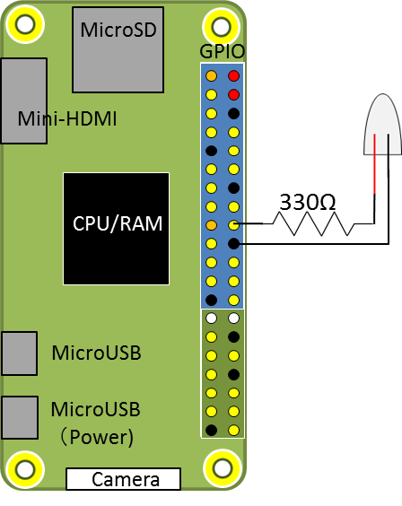

라즈베리파이 GPIO Pin I2C 제어하기를 사용하기 전 주의사항
라즈베리 파이 GPIO I2C 제어하기를 사용하기전 알아두어야 할 사항
안녕하세요.
이번에 소개할 내용은 라즈베리파이에서 GPIO를 사용하기전 알아두어야 할 사항을 작성해 보았습니다.
GPIO는 General Purpose Input / Output 으로 말 그대로 범용 입출력 인터페이스입니다.
PCB, ICT보드 등 다양한 전자기판에서 내부 회로 이외 외부적으로 물리적으로 소통할 수 있는 장치로,
이를 이용해서 LED, Servo Motor 등 다양한 물리적 외부 장치들에 대해서 배선하고 연결하여 제어 할수 있습니다.
아래는 GPIO 배치도 입니다.
무엇을 만드냐에 따라 PIN PORT에 연결하여 제어를 하실수 있습니다.

아래의 명령어로 자신의 라즈베리파이의 GPIO pin을 확인 하실수 있습니다.
1 | $ gpio readall |
라즈베리파이 공식 사이트